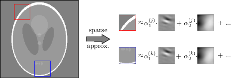
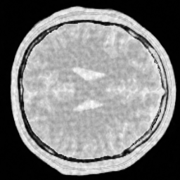
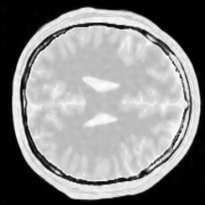
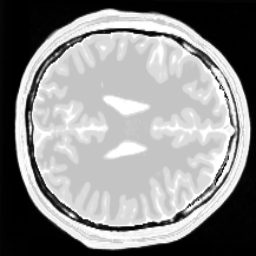

Customization
We promised that MRIReco allows for customization. Lets in the following consider a custom data-driven sparsifying transform that is currently not part of MRIReco.jl [S. Ravishankar and Y. Bresler, IEEE Trans. Med. Imaging, 30 (5), 2011].
It is based on
- Learn a dictionary from a reference image (e.g. adjacent slice) using KSVD $\color{green}\checkmark$
- Implement sparsifying transform which analyses the input image in terms of the dictionary

In order to implement this, we first need the analyze function where we can reuse the matchingpursuit function from Wavelets.jl
function analyzeImage(x::Vector{T},D::Matrix{T},xsize::NTuple{2,Int64},
psize::NTuple{2,Int64};t0::Int64=size(D,2),tol=1e-3) where T
nx,ny = xsize
px,py = psize
x = reshape(x,nx,ny)
x_pad = repeat(x,2,2)[1:nx+px-1,1:ny+py-1] # pad image using periodic boundary conditions
α = zeros(T,size(D,2),nx,ny)
patch = zeros(T,px*py)
for j=1:ny
for i=1:nx
patch[:] .= vec(x_pad[i:i+px-1,j:j+py-1])
norm(patch)==0 && continue
# matchingpursuit is contained in Wavelets.jl
α[:,i,j] .= matchingpursuit(patch, x->D*x, x->transpose(D)*x, tol)
end
end
return vec(α)
endSynthetization can be done by
function synthesizeImage(α::Vector{T},D::Matrix{T},xsize::NTuple{2,Int64},psize::NTuple{2,Int64}) where T
nx,ny = xsize
px,py = psize
x = zeros(T,nx+px-1,ny+py-1)
α = reshape(α,:,nx,ny)
for j=1:ny
for i=1:nx
x[i:i+px-1,j:j+py-1] .+= reshape(D*α[:,i,j],px,py)
end
end
return vec(x[1:nx,1:ny])/(px*py)
endOnce we have those two operations we can setup up a dictionary operator:
function dictOp(D::Matrix{T},xsize::NTuple{2,Int64},psize::NTuple{2,Int64},tol::Float64=1.e-3) where T
produ = x->analyzeImage(x,D,xsize,psize,tol=tol)
ctprodu = x->synthesizeImage(x,D,xsize,psize)
return LinearOperator(prod(xsize)*size(D,2),prod(xsize),false,false
, produ
, nothing
, ctprodu )
endTo test our method, let us load some simulated data and subsample it
# phantom
img = readdlm("data/mribrain100.tsv")
acqData = AcquisitionData(ISMRMRDFile("data/acqDataBrainSim100.h5"))
nx,ny = acqData.encodingSize
# undersample kspace data
acqData = sample_kspace(acqData, 2.0, "poisson", calsize=25,profiles=false);Now we load a pre-trained dictionary, build the sparsifying transform and perform the reconstruction
# load the dictionary
D = ComplexF64.(readdlm("data/brainDict98.tsv"))
# some parameters
px, py = (6,6) # patch size
K = px*py # number of atoms
# CS reconstruction using Wavelets
params = Dict{Symbol,Any}()
params[:reco] = "standard"
params[:reconSize] = (nx,ny)
params[:iterations] = 50
params[:reg] = L1Regularization(2.e-2)
params[:sparseTrafo] = dictOp(D,(nx,ny),(px,py),2.e-2)
params[:ρ] = 0.1
params[:solver] = ADMM
params[:absTol] = 1.e-4
params[:relTol] = 1.e-2
img_d = reconstruction(acqData,params)For comparison, let us perform the same reconstruction as above but with a Wavelet transform
delete!(params, :sparseTrafo)
params[:sparseTrafoName] = "Wavelet"
img_w = reconstruction(acqData,params)The following pictures shows the wavelet based CS reconstruction on the left and the dictionary based CS reconstruction on the right:


For reference, the original data is shown here:

One can clearly see that the dictionary approach performs better than a simple Wavelet L1 prior.